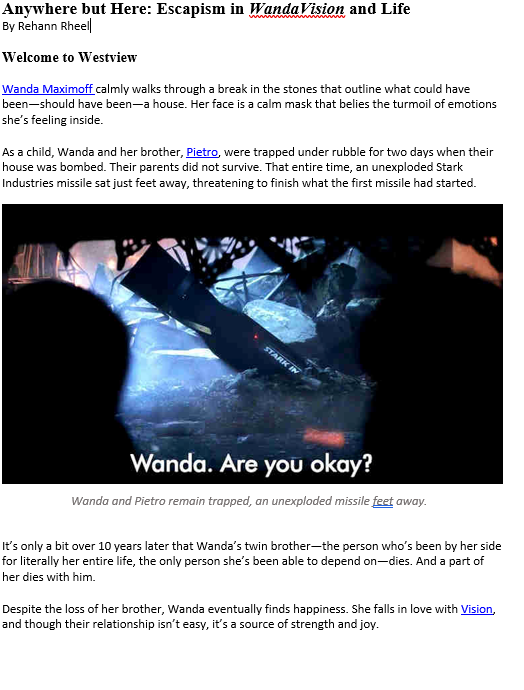
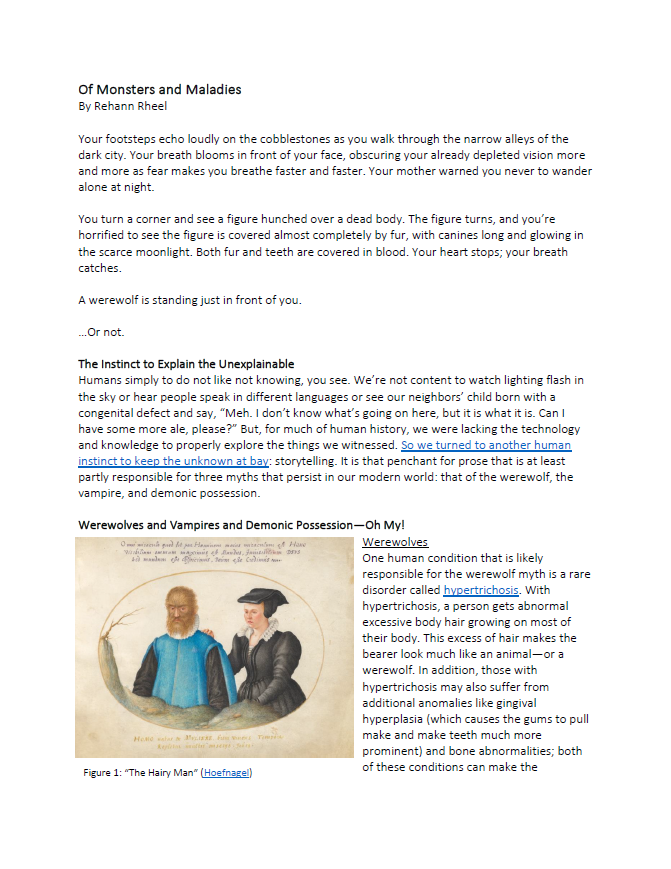
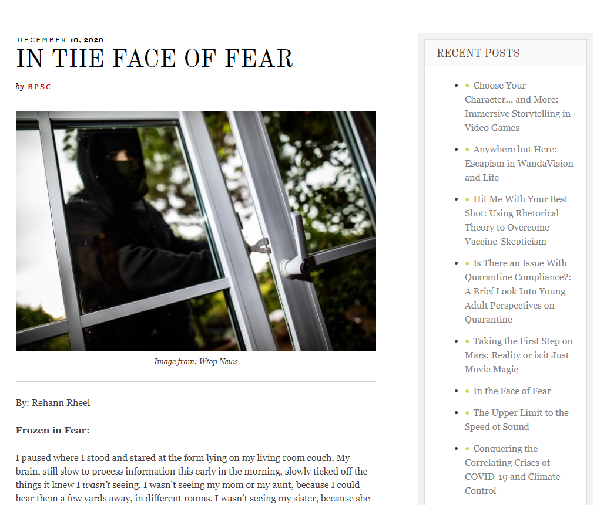
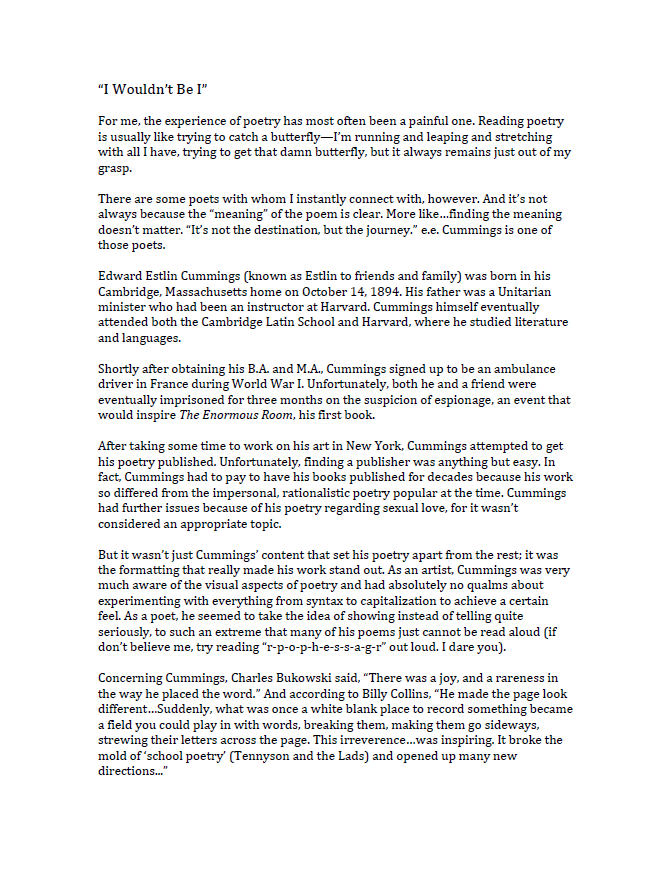
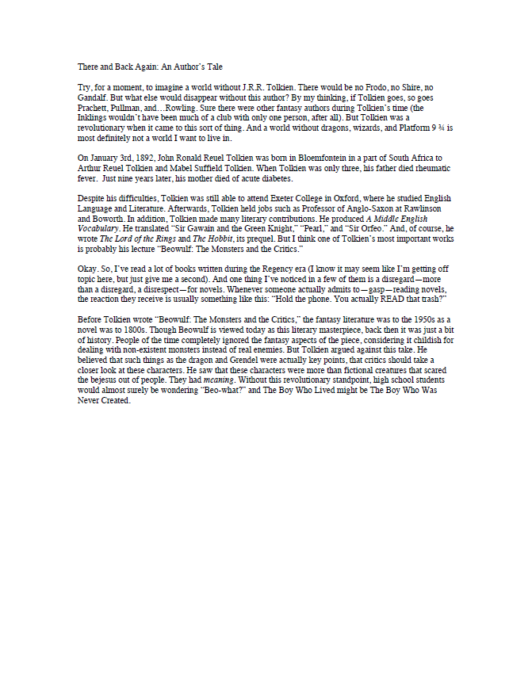
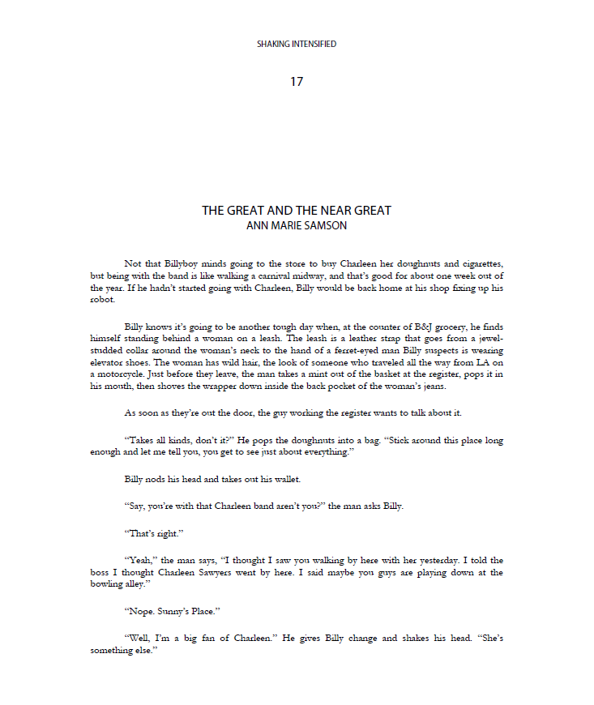
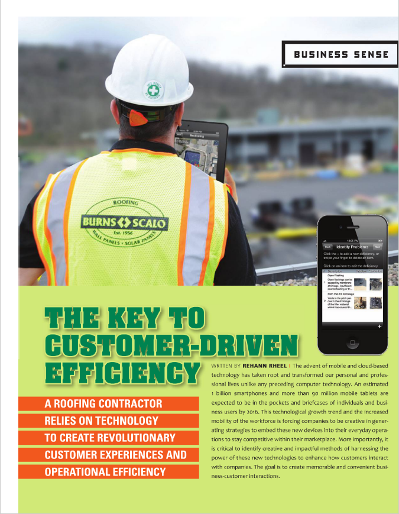

Professional Writing
For most people, professional writing is associated with words like "dull" and "uncreative". I suppose this can be true, but not always. There's not just one type of professional writing. Professional writing is all about determining the best method to send information to a customer. Sometimes that method is a scientific article, but sometimes it's something more creative, like a blog post.
But I think that even the unequivocally dull types of professional writing can be fascinating if you look at it from a different perspective. It's because of professional writing that we have such extensive knowledge of the world we live in. Biologists and psychologists and linguists use professional writing all the time to share their discoveries. New knowledge is built off of the old; without professional writing to share information, progress would be incredibly slow.
Table of Contents
|  | Anywhere but HereAn article focused on what the escapism coping strategy entails, why some people rely on this tactic, and what the pros and cons of this mechanism are. See the accompanying Escape to Daydream clip on the Creative Writing page. |
|  | Of Monsters and MaladiesAn article that explores some origins of the vampire myth. See the accompanying Muffy the Myth Slayer clip on the Creative Writing page. |
|  | In the Face of FearAn article that discusses the fight, flight, and freeze fear responses. |
Bibbidi Bobbidi Book!A grant proposal written and designed for my faux non-profit, Bibbidi Bobbidi Book!. |
|
The Desperate TravelerA travel blog I created during the COVID-19 pandemic to make up for the fact that I couldn't travel anywhere. |
|
|  | I Wouldn't Be IA blog honoring ee cummings' contributions to poetry. |
|  | There and Back Again: An Author's TaleA blog written about JRR Tolkien and how he helped shape the fantasy genre. |
|  | Shaking IntensifiedAn excerpt of my edits for the Shaking Intensified literary magazine. Copyright© 2011 Shaking Literature. |
|  | The Key to Customer-Driven EfficiencyAn article published in Carolina Roofing that explores technology and explains how contractors need to embrace the future to avoid being left behind. |